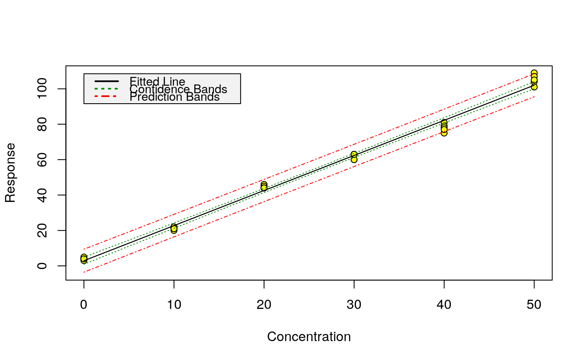

calplot.lm.RdProduce graphics of calibration data, the fitted model as well as confidence, and, for unweighted regression, prediction bands.
calplot(object, xlim = c("auto", "auto"), ylim = c("auto", "auto"), xlab = "Concentration", ylab = "Response", alpha=0.05, varfunc = NULL)
| object | A univariate model object of class |
|---|---|
| xlim | The limits of the plot on the x axis. |
| ylim | The limits of the plot on the y axis. |
| xlab | The label of the x axis. |
| ylab | The label of the y axis. |
| alpha | The error tolerance level for the confidence and prediction bands. Note that this
includes both tails of the Gaussian distribution, unlike the alpha and beta parameters
used in |
| varfunc | The variance function for generating the weights in the model. Currently, this argument is ignored (see note below). |
A plot of the calibration data, of your fitted model as well as lines showing the confidence limits. Prediction limits are only shown for models from unweighted regression.
Prediction bands for models from weighted linear regression require weights
for the data, for which responses should be predicted. Prediction intervals
using weights e.g. from a variance function are currently not supported by
the internally used function predict.lm, therefore,
calplot does not draw prediction bands for such models.
It is possible to compare the calplot prediction bands with the
lod values if the lod() alpha and beta parameters are
half the value of the calplot() alpha parameter.
